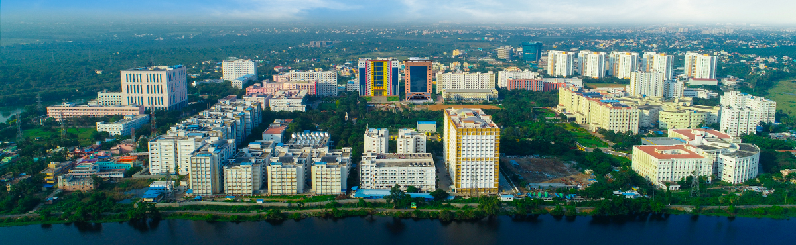

About ICFCIT 2027
International Conference on Recent Trends in Computing
Welcome
The International Conference on Future Computing and Intelligent Technologies (ICFCIT 2027), organized by the Department of Computing Technologies, School of Computing, SRM Institute of Science and Technology (SRMIST), Chennai, India, will be held from September 21–23, 2027, at the SRMIST Kattankulathur Campus. The conference will bring together researchers, academicians, scientists, industry professionals, innovators, practitioners, and students from around the world to share ideas, present original research, and explore emerging possibilities in future computing and intelligent technologies.
ICFCIT 2027 will highlight emerging technologies, practical applications, and future trends in areas such as Artificial Intelligence and Machine Learning, Data Science and Big Data Analytics, Cybersecurity, Internet of Things, Computational Intelligence, Smart Systems, Communication Technologies, Edge and Cloud Computing, 5G/6G, and Advanced Computing. Through keynote speeches, invited talks, technical presentations, workshops, panel discussions, industry interactions, and research sessions, the conference will encourage meaningful knowledge exchange, interdisciplinary collaboration, and innovation.
Ultimately, ICFCIT 2027 aims to strengthen connections between academia, industry, government, and society while promoting the development of secure, scalable, sustainable, trustworthy, intelligent, and human-centric technologies that address emerging technological challenges and contribute to future digital societies.

SRMIST Campus
One of the leading universities in India for education, research, innovation and global collaboration.
SRM Institute of Science and Technology (SRMIST) is one of the leading universities in India, renowned for its excellence in education, research, innovation, and global collaborations. The university has more than 60,000+ full-time students and over 4,460+ experienced faculty members across its various campuses located at Kattankulathur, Ramapuram, Vadapalani, and Baburayanpettai in and around Chennai, Tiruchirappalli in Tamil Nadu, Modinagar in Uttar Pradesh, Sonepat in Haryana near Delhi NCR, Amaravati in Andhra Pradesh, and Gangtok in Sikkim.
SRMIST offers a wide range of Undergraduate, Postgraduate, and Doctoral programs through its six major faculties including Engineering and Technology, Management, Medicine and Health Sciences, Science and Humanities, Law, and Agricultural Sciences. The university is widely recognized for its modern infrastructure, industry-oriented curriculum, advanced research facilities, innovation-driven ecosystem, and excellent placement support.
With a strong emphasis on interdisciplinary research, entrepreneurship, skill development, and global exposure, SRMIST provides students with numerous opportunities to enhance their technical knowledge, leadership abilities, and professional competencies through collaborations with reputed international universities and industries. The institution continues to be ranked among the top universities in India for its commitment to academic excellence, creativity, research, and holistic student development, creating a dynamic learning environment for students and researchers from across the world.
Department of C.Tech
Department of Computing Technologies (CTECH), School of Computing, SRM Institute of Science and Technology.
The Department of Computing Technologies (CTECH) at SRM Institute of Science and Technology is one of the vibrant and fast-growing departments committed to excellence in computing education, research, and innovation. The department focuses on building a strong academic foundation while preparing students to meet the evolving demands of the rapidly changing technology industry.
With a student community of nearly 4000+ undergraduate students, 50+ postgraduate students, and more than 100+ research scholars, CTECH provides a dynamic environment that encourages learning, creativity, technical development, and research-oriented thinking. Supported by experienced faculty members actively involved in teaching, consultancy, industry collaboration, and advanced research, the department continuously updates its curriculum to align with emerging technologies such as Artificial Intelligence, Machine Learning, Data Science, Cyber Security, Cloud Computing, Internet of Things, and Intelligent Systems.
Students are encouraged to participate in internships, workshops, hackathons, industrial training programs, technical events, and research activities that enhance both practical knowledge and professional skills. The department also maintains a strong placement record and excellent industry connections, with students receiving more than 1200+ placement offers during the academic year 2025–26 from leading multinational companies including Microsoft, Amazon, Fidelity, and several other reputed organizations.
With modern laboratories, advanced computing facilities, research-driven learning practices, and continuous interaction with industry experts, the Department of Computing Technologies continues to nurture skilled professionals, innovators, researchers, and future technology leaders capable of contributing significantly to society and the global computing industry.
CMT Acknowledgment
The Microsoft CMT service was used for managing the peer-reviewing process for this conference. This service was provided for free by Microsoft and they bore all expenses, including costs for Azure cloud services as well as for software development and support.
Be part of ICFCIT 2027
Submit your original research and join researchers, academicians and industry professionals from around the world.